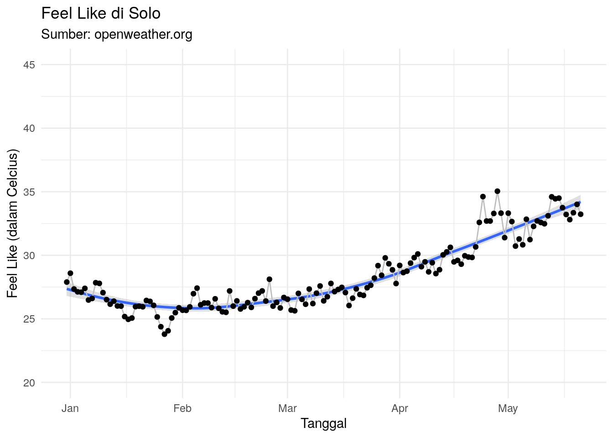

Show me the code!
colnames(df_final)[-1] [1] "kota" "kondisi" "detail_kondisi" "suhu"
[5] "suhu_min" "suhu_max" "feel_like" "humidity"
[9] "lon" "lat" "waktu" Penjelasan Singkat
Tim market riset melakukan pilot project untuk mengambil data cuaca di beberapa kota di Indonesia sebagai tabungan data yang mungkin akan berguna suatu saat nanti.
Temuan kualitatif saat survey terhadap operator makanan dan minuman:
Cuaca panas membuat konsumen membeli minuman seperti NutriSari. Kebalikannya, cuaca dingin membuat jualan minuman seperti NutriSari sepi.
Mengambil data cuaca di beberapa kota di Indonesia.
Data cuaca diambil dari situs Open Weather Map mengandalkan API yang disediakan. Data cuaca yang diambil adalah:
colnames(df_final)[-1] [1] "kota" "kondisi" "detail_kondisi" "suhu"
[5] "suhu_min" "suhu_max" "feel_like" "humidity"
[9] "lon" "lat" "waktu" Kenapa mengambil data cuaca dari situs Open Weather Map? Alasannya:
Berikut adalah kota yang diambil data cuacanya:
Pada bagian ini, kita akan melihat data cuaca di beberapa kota berikut.
bikin_sebaran("Semarang")
bikin_sebaran("Jakarta")
bikin_grafik("Semarang")
bikin_grafik("Jakarta")
bikin_grafik_2("Semarang")
bikin_grafik_2("Jakarta")
list_bulan =
df_final %>%
mutate(bulan = lubridate::month(waktu)) %>%
group_by(bulan,kota) %>%
summarise(suhu_mean = mean(feel_like),
suhu_median = median(feel_like)) %>%
ungroup() %>%
group_split(bulan)
list_bulan[[1]] %>% arrange(desc(suhu_mean)) %>% knitr::kable()| bulan | kota | suhu_mean | suhu_median |
|---|---|---|---|
| 1 | Depok | 32.73231 | 32.625 |
| 1 | Tangerang Selatan | 32.72965 | 32.025 |
| 1 | Gresik | 32.46835 | 32.725 |
| 1 | Semarang | 32.34131 | 32.460 |
| 1 | Sidoarjo | 32.05447 | 31.750 |
| 1 | Jakarta | 31.97754 | 31.345 |
| 1 | Tangerang | 31.82648 | 31.630 |
| 1 | Bogor | 31.73327 | 32.330 |
| 1 | Bekasi | 31.56623 | 31.290 |
| 1 | Probolinggo | 30.48532 | 30.785 |
| 1 | Surabaya | 30.37927 | 29.855 |
| 1 | Palembang | 30.31914 | 30.770 |
| 1 | Makassar | 29.67348 | 26.200 |
| 1 | Balikpapan | 29.39108 | 26.620 |
| 1 | Medan | 29.28838 | 26.790 |
| 1 | Metro | 28.57851 | 26.380 |
| 1 | Samarinda | 28.41149 | 25.970 |
| 1 | Yogyakarta | 28.33125 | 26.315 |
| 1 | Bandar Lampung | 27.99560 | 26.145 |
| 1 | Pringsewu | 27.91883 | 25.975 |
| 1 | Tebing Tinggi | 27.68149 | 25.775 |
| 1 | Solo | 26.71730 | 26.100 |
| 1 | Malang | 26.11359 | 24.800 |
list_bulan[[2]] %>% arrange(desc(suhu_mean)) %>% knitr::kable()| bulan | kota | suhu_mean | suhu_median |
|---|---|---|---|
| 2 | Tangerang Selatan | 33.13736 | 32.590 |
| 2 | Depok | 32.94675 | 32.610 |
| 2 | Jakarta | 32.77243 | 31.890 |
| 2 | Tangerang | 32.69678 | 33.080 |
| 2 | Semarang | 32.63879 | 32.460 |
| 2 | Gresik | 32.61483 | 33.200 |
| 2 | Bekasi | 32.51922 | 32.650 |
| 2 | Sidoarjo | 32.11208 | 31.770 |
| 2 | Bogor | 31.41746 | 32.085 |
| 2 | Surabaya | 31.19152 | 30.330 |
| 2 | Medan | 31.00204 | 30.710 |
| 2 | Makassar | 30.67540 | 30.100 |
| 2 | Balikpapan | 30.35247 | 30.750 |
| 2 | Probolinggo | 30.06078 | 30.205 |
| 2 | Palembang | 29.79290 | 26.220 |
| 2 | Yogyakarta | 29.31793 | 26.550 |
| 2 | Samarinda | 29.12944 | 26.415 |
| 2 | Metro | 28.82353 | 26.425 |
| 2 | Tebing Tinggi | 28.59573 | 26.180 |
| 2 | Pringsewu | 28.45767 | 26.150 |
| 2 | Bandar Lampung | 28.39862 | 26.235 |
| 2 | Solo | 26.93009 | 26.240 |
| 2 | Malang | 26.63168 | 25.110 |
list_bulan[[3]] %>% arrange(desc(suhu_mean)) %>% knitr::kable()| bulan | kota | suhu_mean | suhu_median |
|---|---|---|---|
| 3 | Semarang | 33.16341 | 33.450 |
| 3 | Sidoarjo | 33.12211 | 34.400 |
| 3 | Surabaya | 33.09415 | 34.360 |
| 3 | Gresik | 32.83393 | 33.590 |
| 3 | Tangerang Selatan | 32.58106 | 31.950 |
| 3 | Jakarta | 32.31515 | 31.750 |
| 3 | Depok | 32.25064 | 32.025 |
| 3 | Bekasi | 31.88382 | 31.750 |
| 3 | Tangerang | 31.80455 | 31.420 |
| 3 | Medan | 31.44566 | 30.435 |
| 3 | Palembang | 31.22504 | 30.770 |
| 3 | Bogor | 31.17587 | 32.190 |
| 3 | Makassar | 31.13655 | 31.260 |
| 3 | Balikpapan | 30.18444 | 30.270 |
| 3 | Probolinggo | 29.95397 | 29.760 |
| 3 | Tebing Tinggi | 29.33267 | 26.550 |
| 3 | Samarinda | 29.17211 | 26.340 |
| 3 | Metro | 28.83984 | 26.360 |
| 3 | Yogyakarta | 28.74320 | 26.340 |
| 3 | Pringsewu | 28.50356 | 26.070 |
| 3 | Bandar Lampung | 28.47287 | 26.240 |
| 3 | Solo | 27.85405 | 26.580 |
| 3 | Malang | 26.17939 | 24.820 |
list_bulan[[4]] %>% arrange(desc(suhu_mean)) %>% knitr::kable()| bulan | kota | suhu_mean | suhu_median |
|---|---|---|---|
| 4 | Semarang | 34.38279 | 35.510 |
| 4 | Tangerang Selatan | 34.16255 | 34.040 |
| 4 | Surabaya | 33.63246 | 34.890 |
| 4 | Ambon City | 33.59886 | 34.410 |
| 4 | Sidoarjo | 33.54988 | 34.470 |
| 4 | Tangerang | 33.51680 | 33.660 |
| 4 | Jakarta | 33.51568 | 33.470 |
| 4 | Gresik | 33.49090 | 34.465 |
| 4 | Medan | 33.21772 | 33.750 |
| 4 | Bekasi | 33.20778 | 33.310 |
| 4 | Depok | 33.18449 | 33.255 |
| 4 | Bogor | 32.61944 | 34.445 |
| 4 | Palembang | 32.01103 | 31.320 |
| 4 | Jayapura | 31.83514 | 31.950 |
| 4 | Makassar | 31.80962 | 31.950 |
| 4 | Pontianak | 31.55514 | 26.660 |
| 4 | Solo | 31.48509 | 32.360 |
| 4 | Bima | 31.43829 | 32.620 |
| 4 | Balikpapan | 31.35272 | 32.210 |
| 4 | Manado | 31.10366 | 26.640 |
| 4 | Probolinggo | 30.84316 | 31.080 |
| 4 | Samarinda | 29.96269 | 26.555 |
| 4 | Metro | 29.93722 | 26.610 |
| 4 | Tebing Tinggi | 29.80427 | 26.560 |
| 4 | Yogyakarta | 29.20239 | 26.535 |
| 4 | Bandar Lampung | 29.18893 | 26.385 |
| 4 | Pringsewu | 29.06252 | 26.105 |
| 4 | Bandung | 26.86429 | 25.690 |
| 4 | Malang | 26.46282 | 24.690 |
list_bulan[[5]] %>% arrange(desc(suhu_mean)) %>% knitr::kable()| bulan | kota | suhu_mean | suhu_median |
|---|---|---|---|
| 5 | Kupang | 35.94239 | 36.320 |
| 5 | Semarang | 35.23116 | 35.620 |
| 5 | Jakarta | 35.12311 | 34.995 |
| 5 | Tangerang Selatan | 35.09743 | 35.300 |
| 5 | Bekasi | 34.96010 | 35.310 |
| 5 | Tangerang | 34.68308 | 34.775 |
| 5 | Depok | 34.32813 | 34.010 |
| 5 | Bogor | 33.91291 | 34.950 |
| 5 | Sidoarjo | 33.85903 | 34.990 |
| 5 | Surabaya | 33.80260 | 34.970 |
| 5 | Solo | 33.43796 | 34.480 |
| 5 | Gresik | 33.42010 | 34.600 |
| 5 | Medan | 33.37602 | 33.750 |
| 5 | Banjarmasin | 33.14136 | 32.385 |
| 5 | Banda Aceh | 32.87659 | 32.695 |
| 5 | Padang | 32.39557 | 32.170 |
| 5 | Ambon City | 32.32705 | 33.640 |
| 5 | Palembang | 31.96953 | 31.320 |
| 5 | Makassar | 31.87583 | 31.950 |
| 5 | Pekanbaru | 31.72333 | 31.730 |
| 5 | Balikpapan | 31.48124 | 32.940 |
| 5 | Manado | 31.46829 | 31.090 |
| 5 | Denpasar | 31.34011 | 32.270 |
| 5 | Bitung | 31.30011 | 31.435 |
| 5 | Pontianak | 30.92639 | 26.770 |
| 5 | Sorong | 30.89000 | 31.135 |
| 5 | Probolinggo | 30.19262 | 29.770 |
| 5 | Palu | 30.18125 | 26.655 |
| 5 | Gorontalo | 29.85420 | 26.510 |
| 5 | Metro | 29.84000 | 26.760 |
| 5 | Bima | 29.68835 | 26.290 |
| 5 | Tebing Tinggi | 29.61049 | 26.640 |
| 5 | Jayapura | 29.36602 | 26.660 |
| 5 | Samarinda | 29.21204 | 26.160 |
| 5 | Pringsewu | 29.13961 | 26.280 |
| 5 | Bandar Lampung | 29.09408 | 26.600 |
| 5 | Yogyakarta | 28.19854 | 26.060 |
| 5 | Kendari | 27.68955 | 25.615 |
| 5 | Malang | 25.88019 | 24.550 |
| 5 | Bandung | 25.59835 | 25.030 |